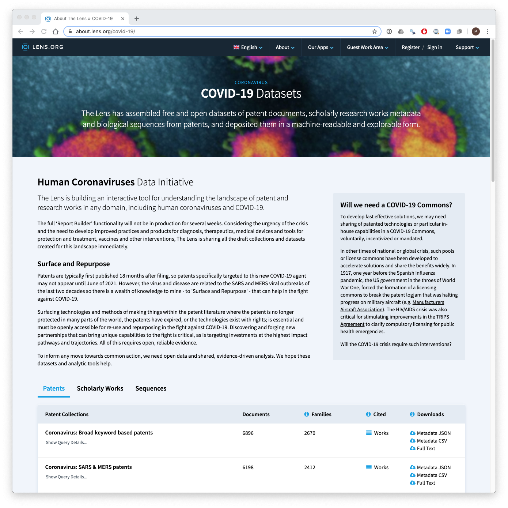

The goal of covidlens dataset package is to make the Lens Collection of Covid-19 patents and scientific literature created by Osmat Jefferson and the Lens team available to the R and wider patent analytics community.
There are three types of data available in the Lens collections:
You can view the datasets and file types at the Lens collection home page.

This package bundles the data into two data frames for patents and literature that you can access and work with in R.
Each of the datasets can also be explored interactively on the Lens by following the links on the home page. You can also download the individual sets in JSON if you prefer that in your workflows.
Due to its size the package is not intended for CRAN but can be downloaded from GitHub with:
# install.packages("devtools") devtools::install_github("poldham/covidlens")
When the package is installed, load the library and call the patents data frame.
library(covidlens) library(tidyverse) patents %>% select(lens_id, publication_number, title) #> # A tibble: 43,075 x 3 #> lens_id publication_numb… title #> <chr> <chr> <chr> #> 1 155-914-041-1… WO2008080153A2 A Novel Protein Kinase C Therapy For The Tr… #> 2 091-446-683-3… WO2008082719A2 Combined Human Papillomavirus Vlp/gene Deli… #> 3 148-612-003-2… WO2008082692A2 Isothiocyanate Compounds, Pharmaceutical Co… #> 4 091-662-665-3… WO2008084294A2 Methods Of Vaccine Administration #> 5 151-647-869-6… WO2008088410A2 Influencing Viral Lipid Constituents #> 6 079-689-936-3… WO2008095040A2 2-5a Analogs And Their Methods Of Use #> 7 081-698-724-3… WO2008093173A1 Positively Charged Water-soluble Prodrugs O… #> 8 186-157-891-1… WO2008105949A2 Methods Of Screening For Respiratory Syncti… #> 9 141-346-197-3… WO2008105934A2 Inactivation Of Toxic Agents And Pathogens … #> 10 117-612-537-0… WO2008115199A2 Chimeric Virus Vaccines #> # … with 43,065 more rows
The data in the patents table combines the data from the different datasets into one table. A short version of the file names is presented in the dataset column.
patents %>% count(dataset, sort = TRUE) #> # A tibble: 13 x 2 #> dataset n #> <chr> <int> #> 1 Ventilators 16805 #> 2 broad-keywords 6896 #> 3 Respirators-and-surgical-masks 6526 #> 4 SARS-MERS 6198 #> 5 SARS-MERS-TAC 1588 #> 6 CPC 1470 #> 7 SARS 1390 #> 8 SARS-treatment 782 #> 9 declared-patseq-organism 762 #> 10 SARS-diagnosis 271 #> 11 MERS 259 #> 12 MERS-treatment 110 #> 13 MERS-diagnosis 18
If you find a record of interest you can use the lens_id to upload the record(s) to the Lens (a free account is needed for that) to investigate further.
The Literature data frame is accessed in the same way.
literature %>% select(lens_id, title) #> # A tibble: 66,233 x 2 #> lens_id title #> <chr> <chr> #> 1 000-000-683-519-… Protocol of a randomized controlled trial testing inhaled … #> 2 000-002-357-318-… SARのTMFと信頼伝搬を利用した教師なし画像セグメンテーション【JST・京大機械翻訳】… #> 3 000-004-088-487-… Comparative proteomics of nasal fluid in seasonal allergic… #> 4 000-011-532-909-… Effect of Asian sand dust on Japanese cedar pollinosis #> 5 000-012-257-396-… Uncertainty in SARS epidemiology #> 6 000-013-075-068-… "Science communication in critical incident the\"SARS\"and… #> 7 000-016-401-960-… Intrinsic Thermodynamics of Protein-Ligand Binding by Isot… #> 8 000-025-802-591-… The application of high precision digital acquisition syst… #> 9 000-028-604-209-… Severe acute respiratory syndrome :Guidelines were drawn u… #> 10 000-029-090-081-… News discourses on distant suffering: a Critical Discourse… #> # … with 66,223 more rows
You can also access the source datasets as for the patents. The names are shortened versions of the file names.
literature %>% count(dataset, sort = TRUE) #> # A tibble: 9 x 2 #> dataset n #> <chr> <int> #> 1 Coronavirus-broad 37166 #> 2 Coronavirus-SARS 14683 #> 3 Coronavirus-COVID19 5947 #> 4 Coronavirus-diagnosis-treatment 2817 #> 5 Coronavirus-MERS 1593 #> 6 Coronavirus-treatment 1481 #> 7 Coronavirus-SARS-diagnosis 1333 #> 8 Coronavirus-transmission 929 #> 9 Coronavirus-MERS-diagnosis 284